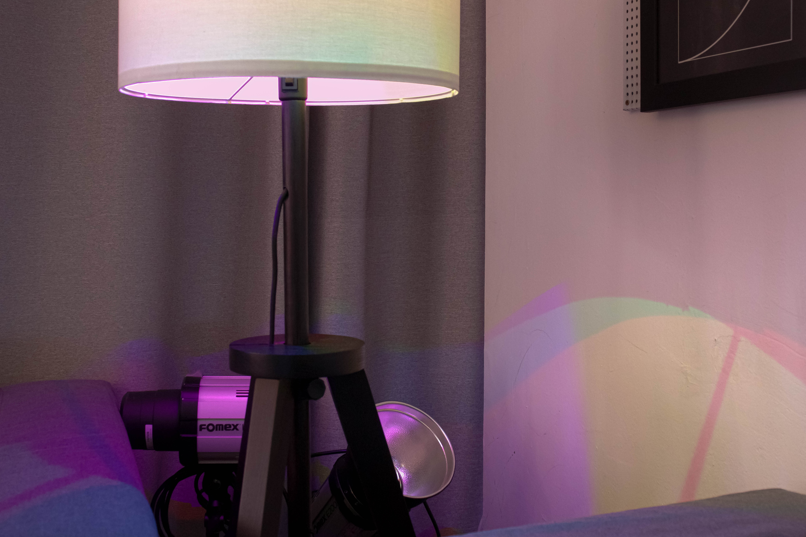

사진은 빛으로 그리는 그림이다. 카메라는 피사체를 렌즈를 통해서 감광재료(현재는 주로 롤필름이 사용됨)에 결상(結像)시키는데, 렌즈와 필름 사이를 어두운 방으로 할 필요가 있으며, 어둠상자 구실을 하는 몸체에 렌즈를 장치하고 필름을 장전할 수 있는 구조로 되어 있다. 이것만 있어도 촬영을 할 수는 있으나, 현재는 필름 감도가 높으므로 조리개와 잠시 동안만 빛을 통과시키는 셔터, 촬영범위를 알기 위한 파인더, 거기에 롤필름을 감는 장치가 첨가되어 있다. 이 밖에 촬영을 편리하게 하고 실패를 방지하는 기구로서 노출계와 각종 자동기구(自動機構)가 필요에 따라 장치되어 있다.
카메라 몸체는 카메라의 종류에 따라 필요한 형태로 제작되고, 주로 경합금 다이캐스트제(製)로, 간혹 합성수지제도 있다. 또 카메라에 따라서는 스테인리스를 프레스로 성형한 것도 볼 수 있다.
옛날에는 나무로 만든 몸체나 프레스에서도 철판을 재료로 사용하였으나, 최근에는 특수한 카메라 외에는 찾아볼 수 없다. 또 대형 카메라에서는 렌즈 부분과 후면(back) 부분 중간에 가죽이나 인조가죽으로 만든 주름상자를 사용하였다.